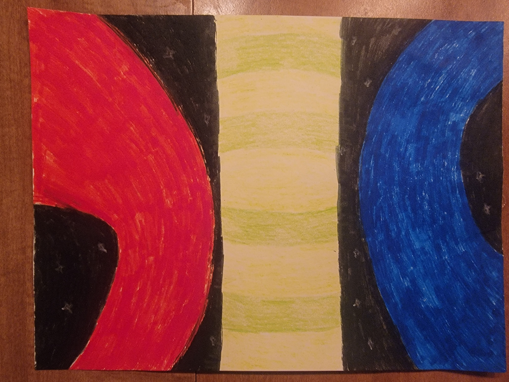

"funny stp man"
When I showed this to Tony, he tried guessing at what "STP" stood for for a few minutes afterwards. To avoid this problem, let me tell you that it stands for Stone Temple Pilots, and its referring to the man who provided the vocal sample used in the song. Its the non-drums thing doing the melody.
"underground iron-pipe based society sewers-adjacent"
This is more than just, like, some shit I wanted to make. I mean, it is, to be clear, but I want to make a whole, like, society. I dunno if I'm gonna use it in a story or what, but I want this- the society that produced this song - to produce other things.
I have no title for this one. It might be album art, I'm not sure.
